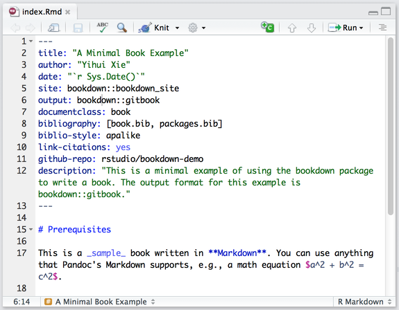
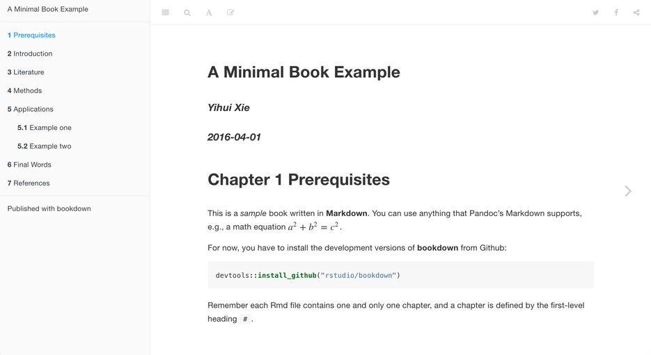
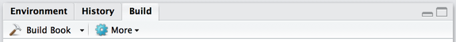

PIPET
PIPET Books에 대하여
We hope you will enjoy bookdown and find this website useful. Looking forward to your own awesome books!
The bookdown package is a free and open-source R package built on top of R Markdown to make it really easy to write books and long-form articles/reports. Markdown is a very simple language but made powerful thanks to Pandoc, and bookdown has added a few important missing features related to writing books, such as figure/table caption numbering and cross-references, and embedding HTML widgets or Shiny apps. We have tried hard to make everything work for all output formats (PDF, HTML, and EPUB, etc), so your readers can choose their favorite file format to read. Although the bookdown package was developed using R, it does not mean your book have to be related to R at all. You can certainly write poems or novels with bookdown!
About bookdown.org
The website bookdown.org is a service provided by RStudio, PBC to host books. It is free for you to publish the static output files of your book, and you hold the full copyright of your own books. Please note that bookdown.org is based on RStudio Connect, so in theory you could publish any types of content here (single R Markdown reports, slides, dashboards, Shiny apps, and so on). However, we only support books here, and reserve the right to stop serving and delete other types of content you publish to bookdown.org. Please consider using RStudio Connect, ShinyApps.io, other hosting services, or your own server for publishing those types of content instead.
Getting started
Below are a few simple steps for you to get started with writing a book using bookdown. For the comprehensive documentation of bookdown, please see https://bookdown.org/yihui/bookdown.
1. Install
First install the bookdown R package as follows:
# you can either use the CRAN version
install.packages('bookdown')
# or the development version on Github
devtools::install_github('rstudio/bookdown')
The RStudio IDE is recommended but not strictly required (we will show it in the next steps).
2. Edit
One way to get started is to fork or clone the the repository https://github.com/rstudio/bookdown-demo (if you are not familiar with Git and GitHub, you can alternatively download it as a zip file and unzip it). Alternatively, if you are using a recent version of the RStudio IDE, you can directly create a book project in the IDE.

Open the demo book project within RStudio, open the index.Rmd file, and click the Knit button:

Now you should see the index page of this book demo in the preview window:

The Knit button renders just the chapter you are currently editing (e.g. index.Rmd, 01-intro.Rmd, etc.) using the default output format for the book. To build all chapters and all formats of the book you can use the Build Book button within the RStudio Build pane:

By default the HTML, PDF, and ePub formats of the book will be compiled into the _book sub-directory of the project (you can also build a single format at a time using the Build Book menu).
3. Publish
To publish your books to bookdown.org, you need to first create an account by signing in with your Google account, and then call the function publish_book() in R:
bookdown::publish_book(render = 'local')
If it is the first time you have tried to publish the book, you will be asked to authorize bookdown to publish to your bookdown.org account.
How to get your book listed on bookdown.org
The list of books on the archive page is generated automatically from all available books published to bookdown.org. Please note that a lot of them are still incomplete.
To make sure your book is properly listed on bookdown.org, you need to add a few optional fields in the YAML metadata in your index.Rmd:
description: A summary of your book (if shorter than 400 characters, more text from your book’s homepage will be used). The description should be plain text without using any Markdown syntax such as_italic_or**bold**or[text](url).github-repo:A character string of your Github repo name of the formuser/repo, e.g.,rstudio/bookdown.cover-image: The path to the cover image of your book (must be accessible via HTTPS).
Here is an example:
description: "This is a minimal bookdown demo. It shows the basics of ..."
github-repo: "rstudio/bookdown-demo"
cover-image: "images/cover.png"
If your book is written with bookdown but not published to bookdown.org, you may edit the file R/staging.txt (just click this link) on Github and submit a pull request (an example). This will get your book listed on the archive page after we merge the pull request.
Books on the bookdown.org homepage are selected manually by us according to their quality and completeness. If you want your book to be featured on the homepage (ideally the book has been published or is at least nearly finished), please submit a pull request as mentioned in the previous step to list it on the archive page. If it looks good to us, we will be happy to list it on the homepage.
If you don’t want your book to be publicly listed on bookdown.org, you may either request us to remove it from the list by editing the file R/exclude.txt, or make the book private on bookdown.org:

Books are also classified by tags on this website. If you want your book to show up on a certain tag page, you need to make sure the tag appears in your book description (case-insensitive). To request a new tag to be added, you may edit the file R/tags.txt.
We hope you will enjoy bookdown and find this website useful. Looking forward to your own awesome books!